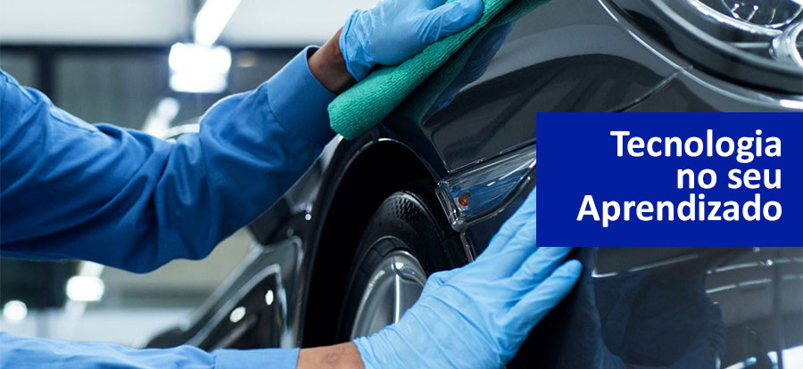

| Home | Quem somos | Contato | |
|  | |
Sobre a universidade
Localizada em uma cidade pitoresca no coração do país, a
- Faculdade de Funilaria e Pintura se destaca como
uma instituição única em seu campo de atuação. Fundada com uma visão
inovadora e uma paixão compartilhada por arte automotiva, a Fafup é
muito mais do que uma simples faculdade; é um centro de excelência
para aqueles que buscam dominar as habilidades da funilaria e
pintura. |
|
Todos os direitos reservados. |
|